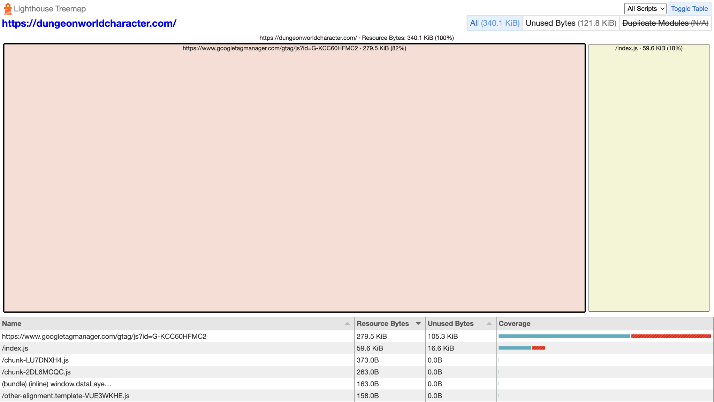
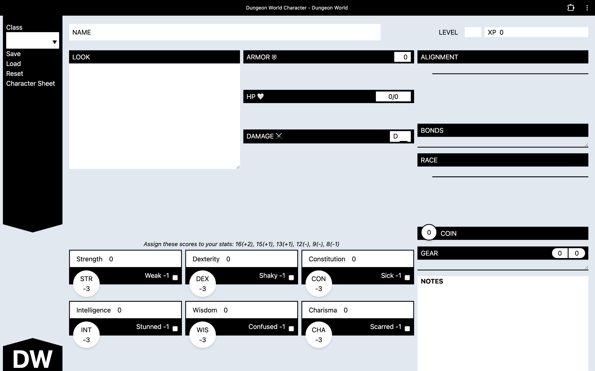
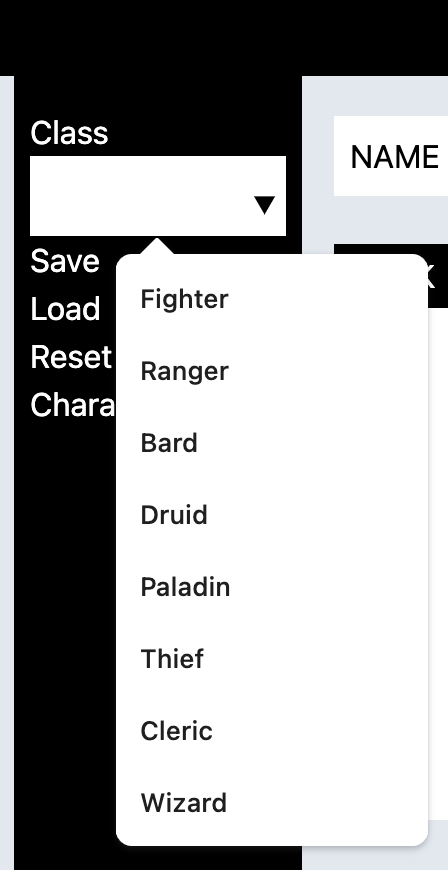
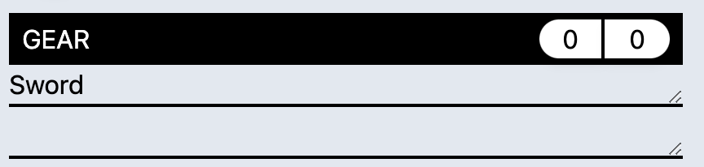

Dungeon World Character Sheet
Dungeon World is a popular Tabletop RPG (TTRPG) system that is built on top of the Powered By the Apocalypse system. The game system is not as popular as other games such as Dungeons and Dragons, but is similar in concept. There are less rules to starting with Dungeon World which is what makes it a great starting point for first time TTRPG players.
When I started playing in this space I noticed there was a lack of digital tools for Dungeon World that allows players to get started in an easy way. This is what drove me to build https://dungeonworldcharacter.com/. This is a digital character sheet that dynamically updates based on form selection as the player selects values.
Technology Stack
Dungeon World Character Sheet is built on top of native JavaScript features and Tailwind CSS. The UI is styled and built 100% from the ground up and is specifically designed to look like the official Dungeon World Character Sheet to ease players into using the new format. Dungeon World Character Sheet uses a mix of the localStorage API and Progressive Web Application features to allow it to work completely offline. You can install the application by simply visiting the website and clicking the install button in the URL bar of your favorite browser.
Figure 1: Showing the install symbol in the browser URL bar.
The choice to make this application a Progressive Web Application without a JavaScript framework was done intentionally to keep the website accessible to as many people as possible. The goal of the website was to allow anybody in the world to use it regardless of high speed internet accessibility. In addition this bought me an incredibly performant web application as well.

Figure 2: Lighthouse Metrics for unthrottled load of the page.

Figure 3: Showing I delivered a premium experience with very little JavaScript.
As you can see in figure 3 I was able to deliver a premium Single Page Application experience with very little JavaScript. This was absolutely intentional and the goal from the start to keep load time fast and bundle sizes small. Anyone anywhere in the world can enjoy this website as long as they have JavaScript enabled and a modern web browser.
One final note about the technology stack. While I didn’t use component based frameworks like React, or Vue we absolutely did take advantage of the built in Web Components technology that exist in modern browsers. This allowed us to build using components without needing all of the expensive overhead associated with all of the Modern JavaScript frameworks. I think it shows that you don’t need a framework to build highly complex applications on the web today.
The code is an open source project hosted on Github and it is deployed via Netlify. The code is hosted here: https://github.com/cogwizzle/dungeon-world-character.
Features
Dynamic Form
The best feature added to Dungeon World Character Sheet is that the form updates dynamically as you fill in information. Dungeon World has some built in classes and we wanted to build in all of those skills and class features. We also wanted to let players add their own custom homebrew content as well. Let’s take a look at what the default form looks like.

Figure 4: Empty Dungeon World Character Sheet Form
As you can see in figure 4 we give our players the option to fill in whatever they want if they haven’t selected their class. This works great for homebrew content.

Figure 5: Smart options
While we allow them to type whatever class they want in the field we give them a smart list of options for the built in Dungeon World classes. This system is used all throughout the character sheet.

Figure 6: Once the class has been selected the form changes substantially.
After a user selects a class the look, alignment, race, and move section all update to allow the player to enter the officially defined Dungeon World character sheet options. We also allow the user to always enter their own custom information so that they can fully customize their characters.
List Inputs
There are several inputs that allow a user to input information in a list style format. An example of this is the Gear field

Figure 7: Gear field.
As you enter an item in the field it expands and adds another field to the form to allow the next item to be input. This feature allows the form to dynamically adapt to the content the user is adding to keep the character sheet the perfect size.
Caching and Saving
Caching the current character sheet and saving your character sheet to a file is important to make sure that you don’t ever lose progress when playing in a single Dungeon World campaign or many different campaigns.
Cache
The first feature we added in this regard was the cache. If the user by chance refreshed the page or the browser crashed we did not want the user to lose the progress. We accomplished this by updating the localStorage cache every time a field was changed in the application.
Saving and Loading

Figure 8: Saving and loading.
Saving and loading can be done from the side bar right next to the character class. Saving will allow you to take a character sheet like the one in figure 9 and get a JSON file that looks like this.

Figure 9: Example character sheet.
Gary.json
{"characterClass":"Cleric","look":{"body":"knobby","eyes":"kind","hair":"bald","clothes":"flowing
robes"},"moves":{"deity":true,"deityBloodyConquest":true,"castASpell":true,"divineGuidance":true,"commune":true,"turnUndead":true,"deityPetitionSuffering":true},"race":"human","alignment":"evil","gear":["Sword"],"characterName":"Gary","level":"1","armor":"0","strength":"8","dexterity":"9","constitution":"12","intelligence":"15","wisdom":"13","charisma":"16","coin":"1","notes":"Hello
World"}This file can then be selected via the load functionality when the player is ready to resume the adventure with this character. It is an easy way to allow players to manage many different characters.
Why this approach?
I decided to go with using local files in order to save and load characters vs using a server to allow the service to be free. Using a server to host characters would incur an amount of cost that was not 0.
Additionally the file save and file load approach is a relatively common thing most people have seen. Microsoft Word (offline not the web app version) works this way and it seems to be a really good system that people are familiar with.
Offline Support
We briefly touched on this earlier but Dungeon World Character Sheet is a Progressive Web Application that is installable. This means that once the user visits the site and downloads the app they can use it completely offline. They can save, load, create new, and update their existing character sheets all offline. This has a major advantage since players may not always have stable internet depending on where they live or where they are playing in the world.
Retrospective
After spending over a year building this application there are some things I would change.
I believe that all applications should work without JavaScript, but this application does not. Even though my goal was to allow anybody in the world to use the application, some parts of the world don’t commonly enable JavaScript. If you live in a location with incredibly slow internet you likely have JavaScript disabled by default to prevent ads from loading or slow JavaScript experiences. I would accomplish this by using a server side language like PHP or Node to render the dynamic forms. In addition I would progressively enhance the server side rendered templates to still allow for all of the offline behavior to work if JavaScript is enabled, but if it was not then rely on the server side language to save and load the JSON files to populate the information.
From a styling perspective I wouldn’t use Tailwind again. I really like Tailwind and it has made a lot of large leaps forward in regards to allowing developers to make really quick changes to CSS. Fundamentally though I think it is a step in the wrong direction. I prefer CSS frameworks like Picocss that work to make the native elements look a specific way rather than relying on hundreds of custom classes. I wouldn’t use Pico because it doesn’t fit the look and feel for this project, but I’d likely try and restyle native elements to fit the design I’ve created. I think this would yield less CSS and an even better performance overall.